수질환경기사 (2018-08-19 기출문제)
1과목: 수질오염개론
1. pH 2.5인 용액을 pH 6.0의 용액으로 희석할 때 용량비를 1:9로 혼합하면 혼합액의 pH는?
- 3.1
- 3.3
- 3.5
- 3.7
(정답률: 66%)

2. 수은(Hg)에 관한 설명으로 틀린 것은?
- 아연정련업, 도금공장, 도자기제조업에서 주로 발생한다.
- 대표적 만성질환으로는 미나마타병, 헌터-루셀 증후군이 있다.
- 유기수은은 금속상태의 수은보다 생물체내에 흡수력이 강하다.
- 상온에서 액체상태로 존재하며, 인체에 노출시 중추신경계에 피해를 준다.
(정답률: 80%)
3. 알칼리도에 관한 방응 중 가장 부적절한 것은?
- CO2+H2O→H2CO3→HCO3-+H+
- HCO3→CO3-2+H+
- CO3-2+H2O→HCO3-+OH-
- HCO3-+H2O→H2CO3+OH-
(정답률: 65%)
4. 미생물 세포의 비증식 속도를 나타내는 식에 대한 설명이 잘못된 것은?
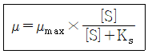
- μmax는 최대 비증식 속도로 시간 -1단위이다.
- Ks는 반속도상수로서 최대성장률이 1/2일 때의 기질의 농도이다.
- μ=μmax인 경우, 반응속도가 기질농도에 비례하는 1차 반응을 의미한다.
- [S]는 제한기질 농도이고 단위는 mg/L이다.
(정답률: 83%)
5. 소수성 콜로이드의 특성으로 틀린 것은?
- 물속에서 에멀션으로 존재함
- 염에 아주 민감함
- 물에 반발하는 성질이 있음
- 소량의 염을 첨가하여도 응결 침전됨
(정답률: 81%)
6. BOD 1kg의 제거에 보통 1kg의 산소가 필요하다면 1.45ton의 BOD가 유입된 하천에서 BOD를 완전히 제거하고자 할 때 요구되는 공기량(m3)은? (단, 물의 공기 흡수율은 7%(부피기준)이며, 공기 1m3은 0.236kg의 O2를 함유한다고 하고 하천의 BOD는 고려하지 않음)
- 약 84773
- 약 85773
- 약 86773
- 약 87773
(정답률: 60%)
7. 2000mg/L Ca(OH)2 용액의 pH는? (단, Ca(OH)2는 완전 해리, Ca 원자량=40)
- 12.13
- 12.43
- 12.73
- 12.93
(정답률: 55%)
8. 성충현상에 관한 설명으로 틀린 것은?
- 수심에 따른 온도변화로 발생되는 물의 밀도차에 의해 발생된다.
- 봄, 가을에는 저수지의 수직혼합이 활발하여 분명한 층의 구별이 없어진다.
- 여름에는 수심에 따른 연직온도경사와 산소구배가 반대 모양을 나타내는 것이 특징이다.
- 겨울과 여름에는 수직운동이 없어 정체현상이 생기며 수심에 따라 온도와 용존산소농도의 차이가 크다.
(정답률: 84%)
9. 다음 반응식 중 환원상태가 되면 가장 나중에 일어나는 반응은? (단, ORP값 기준)
- SO42-→S2-
- NO2-→NH3
- Fe3+→Fe2+
- NO3-→NO2-
(정답률: 57%)
10. 수원의 종류 중 지하수에 관한 설명으로 틀린 것은?
- 수온 변동이 적고 탁도가 낮다.
- 미생물이 거의 없고 오염물이 적다.
- 유속이 빠르고, 광역적인 환경조건의 영향을 받아 정화되는데 오랜 기간이 소요된다.
- 무기염류 농도와 경도가 높다.
(정답률: 79%)
11. Fungi(균류, 곰팡이류)에 관한 설명으로 틀린 것은?
- 원시적 탄소동화작용을 통하여 유기물질을 섭취하는 독립영양계 생물이다.
- 폐수내의 질소와 용존산소가 부족한 경우에도 잘 성장하며 pH가 낮은 경우에도 잘 성장한다.
- 구성물질의 75~80%가 물이며 C10H17O6N을 화학구조식으로 사용한다.
- 폭이 약 5~10μm로서 현미경으로 쉽게 식별되며 슬러지팽화의 원인이 된다.
(정답률: 77%)
12. 부영양호의 수면관리 대책으로 틀린 것은?
- 수생식물의 이용
- 준설
- 약품에 으한 영양염류의 침전 및 황산동 살포
- N, P 유입량의 증대
(정답률: 78%)
13. 내경 5mm인 유리관을 정수 중에 연직으로 세울 때 유리관내의 모세관높이(cm)는? (단, 물의 수온 =15℃, 이때의 표면장력=0.076g/cm, 물과 유리의 접촉각=8°)
- 0.5
- 0.6
- 0.7
- 0.8
(정답률: 60%)
14. 알칼리도가 수질환경에 미치는 영향에 관한 설명으로 가장 거리가 먼 것은?
- 높은 알칼리도를 갖는 물은 쓴맛을 낸다.
- 알칼리도가 높은 물은 다른 이온과 반응성이 좋아 관내에 scale을 형성할 수 있다.
- 알칼리도는 물 속에서 수중생물의 성장에 중요한 역할을 함으로써 물의 생산력을 추정하는 변수로 활용한다.
- 자연수 중 알칼리도의 형태는 대부분 수산화물의 형태이다.
(정답률: 65%)
15. 세균(Bactcria)의 경험적 분자식으로 옳은 것은?
- C5H7O2N
- C5H8O2N
- C7H8O5N
- C8H9O5N
(정답률: 83%)
16. 25℃, 4atm의 압력에 있는 메탄가스 15kg을 저장하는 데 필요한 탱크의 부피(m3)는? (단, 이상기체의 법칙 적용, 표준상태 기준, R=0.082Lㆍatm/molㆍK)
- 4.42
- 5.73
- 6.54
- 7.45
(정답률: 68%)
17. 다음 물질 중 이온화도가 가장 큰 것은?
- CH3COOH
- H2CO3
- HNO3
- NH3
(정답률: 60%)
18. 수산화칼슘[Ca(OH)2]이 중탄산칼슘[Ca(HCO3)2]과 반응하여 탄산칼슘(CaCO3)의 침전이 형성될 때 10g의 Ca(OH)2에 대하여 생성되는 CaCO3의 양(g)은? (단, 칼슘 원자량=40)
- 17
- 27
- 37
- 47
(정답률: 67%)
19. 하수나 기타 물질에 의해서 우원이 오염되었을 때에 물은 일련의 변화과정을 거친다. fungi와 같은 정도로 청록색 내지 녹색 조류가 번식하고, 하류로 내려갈수록 규조류가 성장하는 지대는?
- 분해지대
- 활발한 분해지대
- 회복지대
- 정수지대
(정답률: 65%)
20. 카드뮴이 인체에 미치는 영향으로 가장 거리가 먼 것은?
- 칼슘 대사기능 장해
- Hunter-Russel 장해
- 골연화증
- Fanconi씨 증후군
(정답률: 73%)
2과목: 상하수도계획
21. 표준맨홀의 형상별 용도에서 내경 1500mm 원형에 해당하는 것은?
- 1호맨홀
- 2호맨홀
- 3호맨홀
- 4호맨홀
(정답률: 69%)
22. 상수도 송수시설의 계획송수량 산정에 기준이 되는 수량은?
- 계획 1일 최대급수량
- 계획 1일 평균급수량
- 계획 1일 시간 최대급수량
- 계획 1일 시간 평균급수량
(정답률: 64%)
23. 정수시설의 착수정 구조와 형상에 관한 설계기준으로 틀린 것은?
- 착수정은 분할을 원칙으로 하며 고수위 이상으로 유지되도록 월류관이나 월류위어를 설치한다.
- 형상은 일반적으로 직사각형 또는 원형으로 하고 유입구에는 제수밸브 등을 설치한다.
- 착수정의 고수위와 주변벽체의 상단 간에는 60cm 이상의 여유를 두어야 한다.
- 부유물이나 조류 등을 제거할 필요가 있는 장소에는 스크린을 설치한다.
(정답률: 66%)
24. 상수도시설인 완속여과지에 관한 설명으로 틀린 것은?
- 여과지 깊이는 하부집수장치의 높이에 자갈층 두께와 모래층 두께까지 2.5~3.5m를 표준으로 한다.
- 완속여과지의 여과속도는 4~5m/day를 표준으로 한다.
- 모래층의 두께는 70~90cm를 표준으로 한다.,
- 여과지의 모래면 위의 수심은 90~120cm를 표준으로 한다.
(정답률: 56%)
25. 펌프를 선정할 때 고려 사항으로 적당치 않는 것은?
- 펌프를 최대효율점 부근에서 운전하도록 용량 및 대수를 결정한다.
- 펌프의 설치대수는 유지관리상 가능한 적게하고 동일용량의 것으로 한다.
- 펌프는 저용량일수록 효율이 높으므로 가능한 저용량으로 한다.
- 내부에서 막힘이 없고, 부식 및 마모가 적어야 한다.
(정답률: 77%)
26. 계획우수량 산정 시 고려하는 하수관로의 설계강우로 알맞은 것은?
- 30~50년빈도
- 10~30년빈도
- 10~15년빈도
- 5~10년빈도
(정답률: 67%)
27. 계획오수량에 관한 설명으로 틀린 것은?
- 지하수량은 1인1일최대오수량의 20%이하로 한다.
- 계획시간최대오수량은 계획1일 최대오수량의 1시간당 수량의 1.3~1.8배를 표준으로 한다.
- 합류식에서 우천 시 계획오수량은 원칙적으로 계획시간최대오수량의 3배 이상으로 한다.
- 계획1일평균오수량은 계획1일최대오수량의 50~60%를 표준으로 한다.
(정답률: 76%)
28. 비교회전도(Ns)에 대한 설명으로 틀린 것은?
- 펌프는 Ns 값에 따라 그 형식이 변한다.
- Ns 값이 같으면 펌프의 크기에 관계없이 같은 형식의 펌프로 하고 특성도 대체로 같아진다.
- 수량과 전양정이 같다면 회전수가 많을수록 Ns 값이 커진다.
- 일반적으로 Ns값이 적으면 유량이 큰 저양정의 펌프가 된다.
(정답률: 67%)
29. 정수처리를 위해 완속여과방식(불용해성 성분의 처리방식)만을 선택하였을 때 거의 처리할 수 없는 항목(물질)은?
- 탁도
- 철분, 망간
- ABS
- 농약
(정답률: 69%)
30. 용해성성분으로 무기물인 불소(처리대상물질)를 제거하기 위해 유효한 고도정수처리 방법으로 가장 거리가 먼 것은?
- 응집침전
- 골탄
- 이온교환
- 전기분해
(정답률: 54%)
31. 길이가 100m, 직경이 40cm인 하수관로의 하수유속을 1m/sec로 유지하기 위한 하수관로의 동수경사는? (단, 만관기준, Manning 식의 조도계수 n=0.012)
- 1.2×10-3
- 2.3×10-3
- 3.1×10-3
- 4.6×10-3
(정답률: 58%)
32. 상수도 취수관거의 취수구에 관한 설명으로 틀린 것은?(문제 오류로 가답안 발표시 1번으로 발표되었지만 확정답안 발표시 전항 정답 처리 되었습니다. 여기서는 1번을 누르면 정답 처리 됩니다.)
- 높이는 배사문의 바닥높이보다 0.5~1m 이상 낮게 한다.
- 유입속도는 0.4~0.8m/s를 표준으로 한다.
- 제수문의 전면에는 스크린을 설치한다.
- 계획취수위는 취수구로부터 도수기점까지의 손실수두를 계산하여 결정한다.
(정답률: 73%)
33. 하수관이 부식하기 쉬운 곳은?
- 바닥 부분
- 양 옆 부분
- 하수관 전체
- 관정부(crown)
(정답률: 73%)
34. 전양정에 대한 펌프의 형식 중 틀린 것은?
- 전양정 5m 이하는 펌프구경 400mm 이상의 축류펌프를 사용한다.
- 전양정 3~12m는 펌프구경 400mm 이상의 원심펌프를 사용한다.
- 전양정 5~20m는 펌프구경 300mm 이상의 원심 사류 펌프를 사용한다.
- 전양정 4m 이상은 펌프구경 80mm 이상의 원심펌프를 사용한다.
(정답률: 56%)
35. 우수배제 계획에서 계획우수량을 산정할 때 고려할 사항이 아닌 것은?
- 유출계수
- 유속계수
- 배수면적
- 유달시간
(정답률: 65%)
36. 하수도계획의 목표연도는 원칙적으로 몇 년으로 설정하는가?
- 15년
- 20년
- 2년
- 30년
(정답률: 74%)
37. 상수도 급수배관에 관한 설명으로 틀린 것은?
- 급수관을 공공도로에 부설할 경우에는 도로관리자가 정한 점용위치와 깊이에 따라 배관해야 하며 다른 매설물과의 간격을 30cm 이상 확보한다.
- 급수관을 부설하고 되메우기를 할 때에는 양질토 또는 모래를 사용하여 적절하게 다짐하여 관을 보호한다.
- 급수관이 개거를 횡단하는 경우에는 가능한 한 개거의 위로 부설한다.
- 동결이나 결로의 우려가 있는 급수설비의 노출부분에 대해서는 적절한 방한조치나 결로방지조치를 강구한다.
(정답률: 73%)
38. 펌프의 규정회전수는 10회/sec, 규정토출량은 0.3m3/sec, 펌프의 규정양정이 5m일 때 비교 회전도는?
- 642
- 761
- 836
- 935
(정답률: 65%)
39. 관로의 접합과 관련된 고려 사항으로 틀린 것은?
- 접합의 종류에는 관정접합, 관중심접합, 수면접합, 관저접합 등이 있다.
- 관로의 관경이 변화하는 경우의 접합방법은 원칙적으로 수면접합 또는 관정접합으로 한다.
- 2개의 관로가 합류하는 경우 중심교각은 되도록 60°이상으로 한다.
- 지표의 경사가 급한 경우에는 관경변화에 대한 유무에 관계없이 원칙적으로 단차접합 또는 계단접합을 한다.
(정답률: 63%)
40. 복류수나 자유수면을 갖는 지하수를 취수하는 시설인 집수매거에 관한 설명으로 틀린 것은?
- 집수매거의 길이는 시험우물 등에 의한 양수시험 결과에 따라 정한다.
- 집수매거의 매설깊이는 1.0m 이하로 한다.
- 집수매거는 수평 또는 흐름방향으로 향하여 완경사로 하고 집수매거의 유출단에서 매거내의 평균유속은 1.0m/s 이하로 한다.
- 세굴의 우려가 있는 제외지에 설치할 경우에는 철근콘크리트틀 등으로 방호한다.
(정답률: 62%)
3과목: 수질오염방지기술
41. 막공법에 관한 설명으로 가장 거리가 먼 것은?
- 투석은 선택적 투과막을 통해 용액 중에 다른 이온 혹은 분자의 크기가 다른 용질을 분리시키는 것이다.
- 투석에 대한 추진력은 막을 기준으로 한 용질의 농도차이다.
- 한외여과 및 미여과의 분리는 주로 여과작용에 의한 것으로 역삼투현상에 의한 것이 아니다.
- 역삼투는 반투막으로 용매를 통과시키기 위해 동수압을 이용한다.
(정답률: 62%)
42. 특정의 반응물을 포함하는 폐수가 연속혼합 반응조를 통과할 때 반응물의 농도가 250mg/L에서 25mg/L로 감소하였다. 반응조내의 반응은 일차반응이고, 폐수의 유량이 1일 5000m3이면 반응조의 체적(m3)은? (단, 반응속도 상수(K)=0.2day-1)(문제 오류로 가답안 발표시 4번으로 발표되었지만 실제 시험에서는 전항 정답 처리 되었습니다. 여기서는 4번을 누르면 정답 처리 됩니다.)
- 45000
- 90000
- 112500
- 214286
(정답률: 65%)
43. 호기성 미생물에 의하여 발생되는 반응은?
- 포도당→알코올
- 초산→메탄
- 아질산염→질산염
- 포도당→초산
(정답률: 69%)
44. 난분해성 폐수처리에 이용되는 펜톤 시약은?
- H2O2+철염
- 알루미늄염+철염
- H2O2+알루미늄염
- 철염+고분자응집제
(정답률: 61%)
45. 포기조의 MLSS 농도가 3000mg/L이고, 1L실린더에 30분 동안 침전시킨 후 슬러지 부피가 150mL 이면 슬러지의 SVI는?
- 20
- 50
- 100
- 150
(정답률: 54%)
46. 혐기성 소화조내의 pH가 낮아지는 원인이 아닌 것은?
- 유기물 과부하
- 과도한 교반
- 중금속 등 유해물질 유입
- 온도 저하
(정답률: 59%)
47. 인구가 10000명인 마을에서 발생되는 하수를 활성슬러지법으로 처리하는 처리장에 저율혐기성소화조를 설계하려고 한다. 생슬러지(건조고형물기준) 발생량은 0.11kg/인ㆍ일이며, 휘발성고형물은 건조고형물의 70%이다. 가스발생량은 0.94m3/VSSㆍkg이고 휘발성고형물의 65%가 소화된다면 일일 가스발생량(m3/day)은?
- 약 345
- 약 471
- 약 563
- 약 644
(정답률: 57%)
48. 화학적 인 제거 방법으로 정석탈인법에 사용되는 것은?
- Al
- Fe
- Ca
- Mg
(정답률: 48%)
49. Bar rack의 설계조건이 다음과 같을 때 손실수두(m)는? (단,
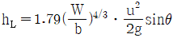
, 원형봉의 지름=20mm, bar의 유효간격 25mm, 수평설치각도=50°, 접근유속=1.0m/sec)- 0.0427
- 0.0482
- 0.⑤19
- 0.⑤99
(정답률: 54%)
50. 정수장에 적용되는 완속여과의 장점이라 볼 수 없는 것은?
- 여과시스템의 신뢰성이 높고 양질의 음용수를 얻을 수 있다.
- 수량과 탁질의 급격한 부하변동에 대응할 수 있다.
- 고도의 지식이나 기술을 가진 운전자를 필요로 하지 않고 최소한의 전력만 필요로 한다.
- 여과지를 간헐적으로 사용하여도 양질의 여과수를 얻을 수 있다.
(정답률: 56%)
51. 정수장의 침전조 설계 시 어려운 점은 물의 흐름은 수평방향이고 입자 침강방향은 중력방향이어서 두 방향의 운동을 해석해야 한다는 점이다. 이상적인 수평 흐름 장방형 침전지(제 I 형 침점)설계를 위한 기본 가정 중 틀린 것은?
- 유입부의 깊이에 따라 SS농도는 선형으로 높아진다.
- 슬러지 영역에서는 유체이동이 전혀 없다.
- 슬러지 영역상부에 사영역이나 단락류가 없다.
- 플러그 흐름이다.
(정답률: 50%)
52. 흡착장치 중 고정상 흡착장치의 역세척에 관한 설명으로 가장 알맞은 것은?
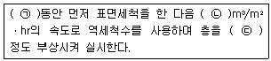
- ㉠ 24시간, ㉡ 14~48, ㉢ 25~30%
- ㉠ 24시간, ㉡ 24~48, ㉢ 10~50%
- ㉠ 짧은시간, ㉡ 14~28, ㉢ 25~30%
- ㉠ 짧은시간, ㉡ 24~48, ㉢ 10~50%
(정답률: 48%)
53. 소독제로서 오존(O3)의 효율성에 대한 설명으로 가장 거리가 먼 것은?
- 오존은 대단히 반응성이 큰 산화제이다.
- 오존은 매우 효과적인 바이러스 사멸제이다.
- 오존처리는 용존 고형물을 증가시키지 않는다.
- pH가 높을 때 소독효과가 좋다.
(정답률: 61%)
54. 폐수의 고도처리에 관한 설명으로 가장 거리가 먼 것은?
- 염수 등 무기염류의 제거에는 전기투석, 역삼투 등을 사용한다.
- 질소제거는 소석회 등을 사용하여 pH 10.8~11.5에서 암모니아 스트리핑을 한다.
- 인산이온은 수산화나트륨 등으로 중화하여 침전처리한다.
- 잔류 COD는 급속사여과 후 활성탄 흡착 처리한다.
(정답률: 40%)
55. 폐수로부터 질소물질을 제거하는 주요 물리화학적 방법이 아닌 것은?
- Phostrip법
- 암모니아스트리핑법
- 파과점염소처리법
- 이온교환법
(정답률: 67%)
56. 살수여상처리공정에서 생성되는 슬러지의 농도는 4.5%이며 하루에 생성되는 고형물의 양은 1,000kg이다. 중력을 이용하여 농축할 때 중력 농축조의 직경(m)은? (단, 농축조의 형태는 원형, 깊이=3m, 중력농축조의 고형물 부하량=25kg/m2ㆍday, 비중=1.0)
- 3.55
- 5.10
- 6.72
- 7.14
(정답률: 37%)
57. BOD 250mg/L인 폐수를 살수여상법으로 처리할 때 처리수의 BOD는 80mg/L/, 온도가 20℃였다. 만일 온도가 23℃로 된다면 처리수의 BOD농도(mg/L)는? (단, 온도 이외의 처리조건은 같음, Et=E20×θt-20, E : 처리효율, θ =1.035)
- 약 46
- 약 53
- 약 62
- 약 71
(정답률: 44%)
58. 아래의 공정은 A2/O공정을 나타낸 것이다. 각 반응조의 주요 기능에 대하여 옳은 것은?
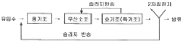
- 혐기조 : 인방출, 무산소조 : 질산화, 폭기조 : 탈질, 인과잉섭취
- 혐기조 : 인방출, 무산소조 : 탈질, 폭기조 : 인과잉섭취, 질산화
- 혐기조 : 탈질, 무산소조 : 질산화. 폭기조 : 인방출 및 과잉섭취
- 혐기조 : 탈질, 무산소조 : 인과잉섭취, 폭기조 : 질산화, 인방출
(정답률: 65%)
59. 수질성분이 금속 하수도관의 부식에 미치는 영향으로 가장 거리가 먼 것은?
- 잔류염소는 용존산소와 반응하여 금속부식을 억제시킨다.
- 용존산소는 여러 부식 반응속도를 증가시킨다.
- 고농도의 염화물이나 황산염은 철, 구리, 납의 부식을 증가시킨다.
- 암모니아는 착화물의 형성을 통하여 구리, 납 등의 용해도를 증가시킬 수 있다.
(정답률: 64%)
60. 활성슬러지법의 변법인 접촉안정화법에 대한 설명으로 가장 거리가 먼 것은?
- 활성슬러지를 하수와 약 5~20분간 비교적 짧은 시간동안 접촉조에서 폭기, 혼합한다.
- 활성슬러지를 안정조에서 3~6시간 폭기하여 흡수, 흡착된 유기물질을 산화시킨다.
- 침전지에서는 접촉조에서 유기물을 흡수, 흡착한 슬러지를 분리한다.
- 유기물의 상당향이 콜로이드 상태로 존재하는 도시하수처리에 적합하다.
(정답률: 47%)
4과목: 수질오염공정시험기준
61. 웨어의 수두가 0.25m, 수로의 폭이 0.8m, 수로의 밑면에서 절단 하부점까지의 높이가 0.7m인 직각 3각웨어의 유량(m3/min)은? (단, 유량계수
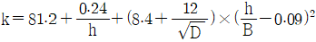
)- 1.4
- 2.1
- 2.6
- 2.9
(정답률: 46%)
62. 자외선/가시선 분광법(인도페놀법)으로 암모니아성 질소를 측정할 때 암모늄 이온이 차라염소산의 공존 아래에서 페놀과 반응하여 생성하는 인도페놀의 색깔과 파장은?
- 적자색, 510nm
- 적색, 540nm
- 청색, 630nm
- 황갈색, 610nm
(정답률: 50%)
63. 용기에 의한 유량 측정방법 중 최대유량 1m3/분 이상인 경우에 관한 내용으로 ()에 맞는 것은?
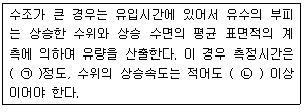
- ㉠ 1분, ㉡ 매분 1cm
- ㉠ 1분, ㉡ 매분 3cm
- ㉠ 5분, ㉡ 매분 1cm
- ㉠ 5분, ㉡ 매분 3cm
(정답률: 54%)
64. 기체크로마토그래피법의 전자포획검출기에 관한 설명으로 ()에 알맞은 것은?
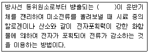
- α(알파)선
- β(베타)선
- γ(감마)선
- 중성자선
(정답률: 65%)
65. 불꽃원자흡수분광광도법 분석절차 중 가장 먼저 수행되는 것은?
- 최적의 에너지 값을 얻도록 선택파장을 최적화 한다.
- 버너헤드를 설치하고 위치를 조정한다.
- 바탕시료를 주입하여 영점조정을 한다.
- 공기와 아세틸렌을 공급하면서 불꽃을 발생시키고 최대감도를 얻도록 유량을 조절한다.
(정답률: 51%)
66. 총대장균군 측정 시에 사용하는 배양기의 배양온도기준으로 옳은 것은?
- 20±1℃
- 25±0.5℃
- 30±1℃
- 35±0.5℃
(정답률: 66%)
67. 수질오염공정시험기준 총칙에서 용어의 정의가 틀린 것은?
- 무게를 “정확히 단다”라 함은 규정된 수치의 무게를 0.1mg까지 다는 것을 말한다.
- 시험조작 중 “즉시”란 30초 이내에 표시된 조작을 하는 것을 뜻한다.
- “바탕시험을 하여 보정한다”라 함음 시료를 사용하여 같은 방법으로 조작한 측정치를 보정하는 것을 말한다.
- “정확히 취하여”라 하는 것은 규정한 양의 액체를 부피피펫으로 눈금까지 취하는 것을 말한다.
(정답률: 59%)
68. 시료 중 분석대상물의 농도가 낮거나 복잡한 매질 중에서 분석대상물만을 선택적으로 추출하여 분석하고자 할 때 사용되는 전처리방법으로 가장 적당한 것은?
- 마이크로파 산분해법
- 전기회화로법
- 산분해법
- 용매추출법
(정답률: 57%)
69. 원자흡수분광광도법에 의한 크롬측정에 관한 설명으로 ()에 맞는 것은?
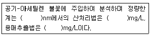
- 357.9, 0.01, 0.001
- 357.9, 0.001, 0.01
- 715.8, 0.01, 0.001
- 715.8, 0.001, 0.01
(정답률: 45%)
70. 기기분석법에 관한 설명으로 틀린 것은?
- 유도결합플라스마(ICP)는 시료도입부, 고주파전원부, 광원부, 분광부, 연산처리부 및 기록부로 구성되어 있다.
- 원자흡수분광광도법은 시료중의 유해중금속 및 기타 원소의 분석에 적용한다.
- 흡광광도법은 차장 200~900nm에서의 액체의 흡광도를 측정한다.
- 기체크로마토그래피법의 검출기 중 열전도도검출기는 인 또는 유황화합물의 선택적 검출에 주로 사용된다.
(정답률: 50%)
71. 하천수의 시료 채취 지점에 관한 내용으로 ()에 공통으로 들어갈 내용은?
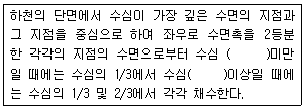
- 2m
- 3m
- 5m
- 6m
(정답률: 67%)
72. 자외선/가시선분광법을 이용하여 아연을 측정하는 원리로 ()에 옳은 내용은?
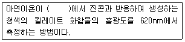
- pH 약 2
- pH 약 4
- pH 약 9
- pH 약 11
(정답률: 63%)
73. 분석물질의 농도변화에 대한 지시값을 나타내는 검정곡선방법에 대한 설명으로 옳은 것은?
- 검정곡선법은 시료의 농도와 지시값과의 상관성을 검정곡선 식에 대입하여 작성하는 방법으로, 직선성이 유지되는 농도범위내에서 제조농도 3~5개를 사용한다.
- 표준물첨가법은 시료와 동일한 매질에 일정향의 표준물질을 첨가하여 검정곡선을 작성하느 ㄴ것으로, 시험분석 절차, 기기 또는 시스템의 변동으로 발생하는 오차를 보정하기 위해 사용한다.
- 내부표준법은 표준용액과 시료에 동일한 양의 내부표준물질을 첨가하여 검정곡선을 작성하는 것으로, 매질효과가 큰 시험분석방법에서 분석 대상 시료와 동일한 매질의 시료를 확보하지 못한 경우에 매질효과를 보정하기 위해 사용한다.
- 검정곡선의 검증은 방법검출한계의 2~5배 또는 검정곡선의 중간 농도에 해당하는 표준용액에 대한 측정값이 검정곡선 작성시의 지시값과 10% 이내에서 일치하여야 한다.
(정답률: 37%)
74. 막여과법에 의한 총대장균군 측정방법에 대한 설명으로 틀린 것은?
- 페트리접시에 배지를 올려놓은 다음 배양 후 금속성 광택을 띠는 적색이나 진한적색계통의 집락을 계수하는 방법이다.
- 총대장균군은 그람음성, 무아포성의 간균으로서 락토스를 분해하여 가스 또는 산을 발생하는 모든 호기성 또는 통성 혐기성균을 말한다.
- 양성대조군은 E, Coli 표준균주를 사용하고 음성대조군은 멸균 희석수를 사용하도록 한다
- 고체배지는 에탄올(90%) 20mL를 포함한 정제수 1L에 배지를 정해진 고체배지 조성대로 넣고 완전히 녹을 때까지 저어주면서 끓인다. 이 때 고압증기멸균한다.
(정답률: 49%)
75. 유기물 함량이 낮은 깨끗한 하천수나 호소수등의 시료 전처리 방법으로 이용되는 것은?
- 질산에 의한 분해
- 염산에 의한 분해
- 황산에 의한 분해
- 아세트산에 의한 분해
(정답률: 55%)
76. 환원제인 FeSO4용액 25mL을 H2SO4 산성에서 0.1N-K2Cr2O7으로 산화시키는 데 31.25mL소비되었다. FeSO4용액 200mL를 0.⑤N 용액으로 만들려고 할 때 가하는 물의 양(mL)은?
- 200
- 300
- 400
- 500
(정답률: 34%)
77. 자외선/가시선 분광법을 적용한 페놀류 측정에 관한 내용으로 옳은 것은?
- 정량한계는 클로로폼측정법일 때 0.025mg/L이다.
- 정량범위는 직접측정법일 때 0.025~0.⑤mg/L이다.
- 증류한 시료에 염화암모늄-암모니아 완충액을 넣어 pH 10으로 조절한다.
- 4-아미노안티피린과 페리시안 칼륨을 넣어 생성된 청색의 안티피린계 색소의 흡광도를 측정하는 방법이다.
(정답률: 45%)
78. 산화성물질이 함유된 시료나 착색된 시료에 적합하며 특히 윙클러-아자이드화나트륨 변법에 사용할 수 없는 폐하수의 용존산소 측정에 유용하게 사용할 수 있는 측정법은?
- 이온크로마토그래피법
- 기체크로마토그래피법
- 알칼리비색법
- 전극법
(정답률: 42%)
79. 유도결합플라스마 원자발광분광법에 의해 측정할 수 있는 항목이 아닌 것은?
- 6가크롬
- 비소
- 불소
- 망간
(정답률: 50%)
80. 원자흡수분광광도법에서 일어나는 간섭에 대한 설명으로 틀린 것은?
- 광학적 간섭 : 분석하고자 하는 원소의 흡수파장과 비슷한 다른 원소의 파장이 서로 겹쳐 비이상적으로 높게 측정되는 경우
- 물리적 간섭 : 표준용액과 시료 또는 시료와 시료 간의 물리적 성질(점도, 밀도, 표면장력 등)의 차이 또는 표준물질과 시료의 매질(matrix) 차이에 의해 발생
- 화학적 간섭 : 불꽃의 온도가 분자를 들뜬 상태로 만들기에 충분히 높지 않아서, 해당 파장을 흡수하지 못하여 발생
- 이온화 간섭 : 불꽃온도가 너무 낮을 경우 중성원자에서 전자를 빼앗아 이온이 생성될 수 있으며 이 경우 양(+)의 오차가 발생
(정답률: 62%)
5과목: 수질환경관계법규
81. 환경부령으로 정하는 페수무방류배출시설의 설치가 가능한 특정수질유해물질의 아닌 것은?(오류 신고가 접수된 문제입니다. 반드시 정답과 해설을 확인하시기 바랍니다.)
- 디클로로메탄
- 구리 및 그 화합물
- 카드뮴 및 그 화합물
- 1, 1-디클로로에틸렌
(정답률: 38%)
82. 물환경보전법상 폐수에 대한 정의로 ()에 맞는 것은?
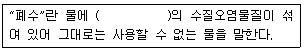
- 액체성 또는 고체성
- 기체성, 액체성 또는 고체성
- 기체성 또는 가연성
- 고체성
(정답률: 63%)
83. 수질오염방지시설 중 물리적 처리시설에 해당되지 않는 것은?
- 혼합시설
- 흡착시설
- 응집시설
- 유수분리시설
(정답률: 42%)
84. 할당오염부하량 등을 초과하여 배출한 자로부터 부과ㆍ징수하는 오염총량초과부과금 산정방법으로 ()에 들어갈 내용은?
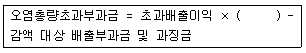
- 초과율별 부과계수
- 초과율별 부과계수×지역별 부과계수
- 지역별부과계수×위반횟수별 부과계수
- 초과율별 부과계수×지역별 부과계수×위반횟수별 부과계수
(정답률: 54%)
85. 공공폐수처리시설의 유지ㆍ관리기준에 따라 처리시설의 관리ㆍ운영자가 실시하여야 하는 방류수 수질검사의 횟수 기준은? (단, 시설의 규모는 1500m3/day, 처리시설의 적정 운영을 확인하기 위한 검사이다.)
- 2월 1회 이상
- 월 1회 이상
- 월 2회 이상
- 주 1회 이상
(정답률: 52%)
86. 폐수처리방법이 물리적 또는 화학적 처리방법인 경우 적정 시운전 기간은?
- 가동개시일부터 70일
- 가동개시일부터 50일
- 가동개시일부터 30일
- 가동개시일부터 15일
(정답률: 54%)
87. 수질오염방지시설 중 생물화학적 처리시설이 아닌 것은?
- 접촉조
- 살균시설
- 돈사톱밥발효시설
- 폭기시설
(정답률: 60%)
88. 환경정책기본법에 따른 환경기준에서 하천의 생활환경기준에 포함되지 않는 검사항목은?
- TP
- TN
- DO
- TOC
(정답률: 44%)
89. 공공폐수처리시설의 유지ㆍ관리기준에 관한 내용으로 ()에 맞는 것은?
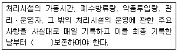
- 1년간
- 2년간
- 3년간
- 5년간
(정답률: 45%)
90. 폐수배출시설을 설치하려고 할 때 수질오염물질의 배출허용기준을 적용받지 않는 시설은?
- 폐수무방류배출시설
- 일 50톤 미만의 폐수처리시설
- 일 10톤 미만의 폐수처리시설
- 공공폐수처리시설로 유입되는 폐수처리시설
(정답률: 45%)
91. 초과부과금 산정기준에서 수질오염물질 1킬로그램당 부과 금액이 가장 적은 것은?
- 카드뮴 및 그 화합물
- 수은 및 그 화합물
- 유기인 화합물
- 비소 및 그 화합물
(정답률: 36%)
92. 거짓이나 그 밖의 부정한 방법으로 폐수배출시설 설치허가를 받았을 때의 행정처분 기준은?
- 개선명령
- 허가취소 또는 폐쇄명령
- 조업정지 5일
- 조업정지 30일
(정답률: 60%)
93. 특정수질유해물질이 아닌 것은?
- 구리 및 그 화합물
- 셀레늄 및 그 화합물
- 플루오르 화합물
- 테트라클로로에틸렌
(정답률: 47%)
94. 규정에 의한 관계공무원의 출입ㆍ검사를 거부ㆍ방해 또는 기피한 폐수무방류배출시설을 설치ㆍ운영하는 사업자에게 처하는 벌칙 기준은?
- 3년 이하의 징역 또는 3천만원 이하의 벌금
- 2년 이하의 징역 또는 2천만원 이하의 벌금
- 1년 이하의 징역 또는 1천만원 이하의 벌금
- 500만원 이하의 벌금
(정답률: 53%)
95. 국립환경과학원장이 설치할 수 있는 측정망이 아닌 것은?
- 도심하천 측정망
- 공공수역 유해물질 측정망
- 퇴적물 측정망
- 생물 측정망
(정답률: 50%)
96. 비점오염저감시설 중 자연형 시설인 인공습지 설치기준으로 틀린 것은?
- 인공습지의 유입구에서 유출구까지의 유로는 최대한 길게 하고 길이 대 폭의 비율은 2:1 이상으로 한다.
- 유입부에서 유출부까지의 경사는 0.5%이상 1.0%이하의 범위를 초과하지 아니하도록 한다.
- 침전물로 인하여 토양의 공극이 막히지 아니하는 구조로 설계한다.
- 생물의 서식 공간을 창출하기 위하여 5종부터 7종까지의 다양한 식물을 심어 생물다양성을 증가시킨다.
(정답률: 37%)
97. 사업장별 환경기술인의 자격기준 중 제2종 사업장에 해당하는 환경기술인의 기준은?
- 수질환경기사 1명 이상
- 수질환경산업기사 1명 이상
- 환경기능사 1명 이상
- 2년 이상 수질분야에 근무한 자 1명 이상
(정답률: 64%)
98. 수질오염경보 중 수질오염감시경보 대상 항목이 아닌 것은?
- 용존산소
- 전기전도도
- 부유물질
- 총유기탄소
(정답률: 36%)
99. 정당한 사유 없이 공공수역에 분뇨, 가축분뇨, 동물의 사체, 폐기물(지정폐기물 제외) 또는 오니를 버리는 행위를 하여서는 아니 된다. 이를 위반한 분뇨ㆍ가축분뇨 등을 버린 자에 대한 벌칙 기준은?
- 6월 이하의 징역 또는 5백만원 이하의 벌금
- 1년 이하의 징역 또는 1천만원 이하의 벌금
- 2년 이하의 징역 또는 2천만원 이하의 벌금
- 3년 이하의 징역 또는 3천만원 이하의 벌금
(정답률: 53%)
100. 폐수배출시설외에 수질오염물질을 배출하는 시설 또는 장소로서 환경부령이 정하는 것(기타수질오염원)의 대상시설과 규모기준에 관한 내용으로 틀린 것은?
- 자동차폐차장시설 : 면적 1000m2 이상
- 수조식 육상양식어업시설 : 수조면적 합게 500m2 이상
- 골프장 : 면적 3만 m2 이상
- 무인자동식 현상, 인화, 정착시설 : 1대 이상
(정답률: 57%)
pH 2.5 용액의 [H+] 농도는 10^-2.5 = 3.16 x 10^-3 M입니다. 이를 1:9 용량비로 혼합하면, 총 용액의 [H+] 농도는 (3.16 x 10^-3 M) x (1/10) = 3.16 x 10^-4 M가 됩니다.
이 [H+] 농도에 대응하는 pH는 -log(3.16 x 10^-4) = 3.5입니다. 따라서 정답은 "3.5"입니다.